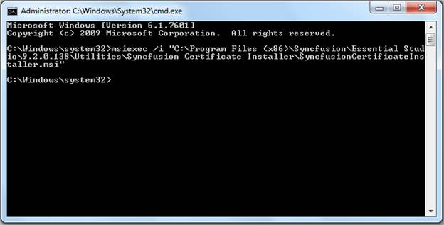
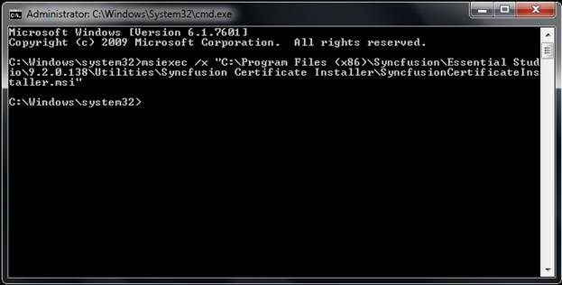
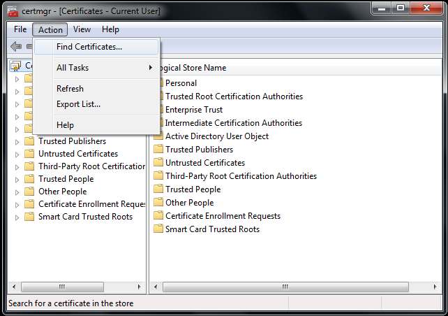
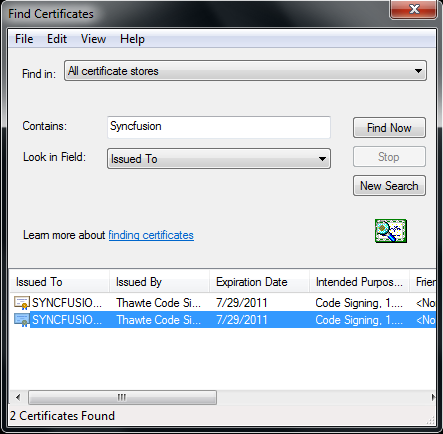
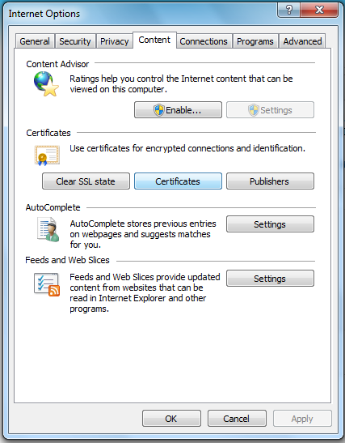
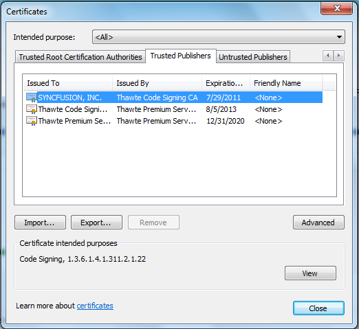

Syncfusion Certificate Installer installs the Syncfusion Certificate in client machine. From 9.2.0.138, this is available in installer setup.
Installing Syncfusion Certificate installer
The following steps illustrate how to install Syncfusion Certificate installer:
1. Open command prompt in admin mode and run the following command:
>msiexec /i “(SyncfusionCertificateInstaller.msi location)\ SyncfusionCertificateInstaller.msi”
Example
>msiexec /i "C:\Program Files\Syncfusion\Essential Studio\9.2.0.138\Utilities\Certificate Installer\SyncfusionCertificateInstaller.msi”

Figure 142: Syncfusion Certificate Install
Uninstalling the Syncfusion Certificate Installer
The following code illustrates how to uninstall the Syncfusion Certificate Installer:
1. Open command prompt in admin mode.
2. Run the following command:
>msiexec /x “(SyncfusionCertificateInstaller.msi location)\ SyncfusionCertificateInstaller.msi”
Example
>msiexec /x "C:\Program Files\Syncfusion\Essential Studio\9.2.0.138\Utilities\Certificate Installer\SyncfusionCertificateInstaller.msi”

Figure 143: Syncfusion Certificate Uninstall
Viewing the Syncfusion Certificate
The following steps illustrate how to view the Syncfusion Certificate:
1. Open certmgr.msc[Certificate-Current user] from
the following location:
Start -> Run -> certmgr msc
2. Open Action from tools menu.
3. Click Find Certificates from the menu list.

Figure 3: Certificate Manager (certmgr.msc)
4. Enter Syncfusion into Contains textbox.
5. Select Issued To from the Look in Fields drop-down list.
6. Click Find Now.

Figure 4: Find Certificates
You can view Syncfusion Certificate, if you have installed the certificate. You can also view the certificates using the Internet Explorer.
To view the Syncfusion Certificate through the Internet Explorer:
1. Select Tools > Internet Options. The Internet Options dialog box opens.

Figure 144: Internet Options
2. In Content tab, click the Certificates button. certificates dialog box

Figure 145:Certificates Dialog
3. Select Trusted Publishers tab. It will show the Syncfusion certificate to be installed.